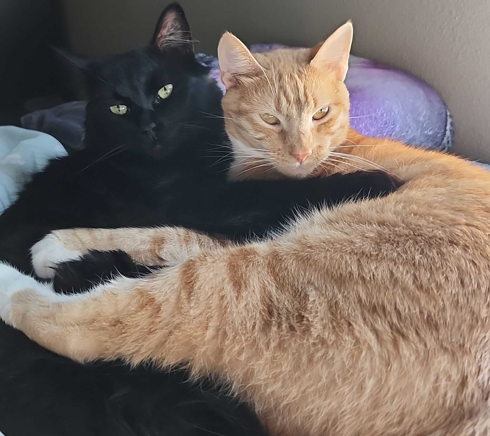
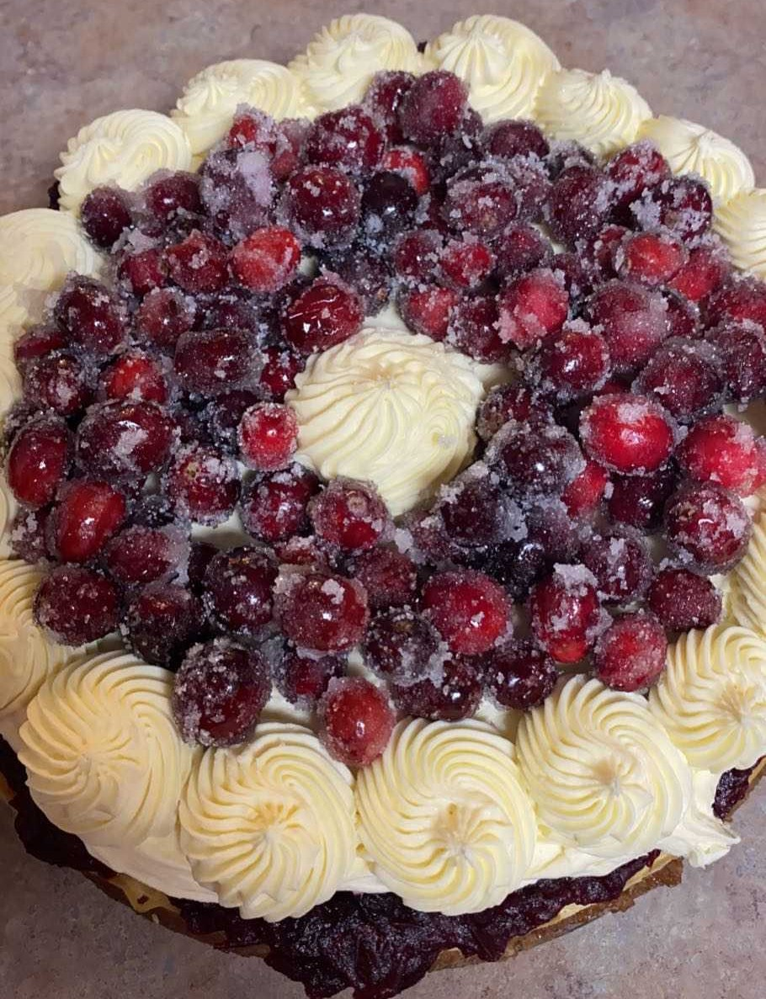

About Me
Hey there! I'm Ashley. I'm a PhD Candidate at Louisiana State University, studying exoplanets and their host stars. Here is a little about me:
I am a:
Parent of 2 Cats
My two cats are named Super (the orange one) and Nova (the black one). They are my very own Super-Nova. Nova is my 5 year old quarantine kitty (adopted in 2020). Super is my 3 year old sweet angel baby who rarely gets a turn with the brain-cell. They are bonded and I wake up to them in this exact position at least once ro twice a week.
Baker
I love to bake and tend to stress bake frequently. Some of my favorite creations have been the vanilla bean cheesecake with white chocolate ganache and candied cranberries pictured to the right, my infamous punpkin chocolate chip bread, pumpkin snickerdoodles, and brown butter and sea salt chocolate chip cookies.
Traveler
I love to travel and have been so lucky to get to travel to some amazing places. I always like to go hiking anytime I visit a new place. Some places I've been: Zion National Park (pics 1 and 2), Isle de Porquerolles, France (pic 3), Nice, France (pic 4), the Great Smokey Mountains National Park, Tennessee (pic 5), and Iceland (pic 6)